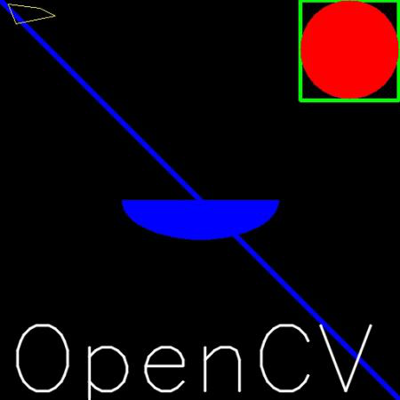

Drawing Functions in OpenCV
In all the above functions, you will see some common arguments as given below:
To draw a line, you need to pass starting and ending coordinates of line. We will create a black image and draw a blue line on it from top-left to bottom-right corners.
import numpy as np
import cv2
# Create a black image
img = np.zeros((512,512,3), np.uint8)
# Draw a diagonal blue line with thickness of 5 px
cv2.line(img,(0,0),(511,511),(255,0,0),5)
To draw a rectangle, you need top-left corner and bottom-right corner of rectangle. This time we will draw a green rectangle at the top-right corner of image.
cv2.rectangle(img,(384,0),(510,128),(0,255,0),3)
To draw a circle, you need its center coordinates and radius. We will draw a circle inside the rectangle drawn above.
cv2.circle(img,(447,63), 63, (0,0,255), -1)
To draw the ellipse, we need to pass several arguments. One argument is the center location (x,y). Next argument is axes lengths (major axis length, minor axis length). angle is the angle of rotation of ellipse in anti-clockwise direction. startAngle and endAngle denotes the starting and ending of ellipse arc measured in clockwise direction from major axis. i.e. giving values 0 and 360 gives the full ellipse. For more details, check the documentation of cv2.ellipse(). Below example draws a half ellipse at the center of the image.
cv2.ellipse(img,(256,256),(100,50),0,0,180,255,-1)
To draw a polygon, first you need coordinates of vertices. Make those points into an array of shape ROWSx1x2 where ROWS are number of vertices and it should be of type int32. Here we draw a small polygon of with four vertices in yellow color.
pts = np.array([[10,5],[20,30],[70,20],[50,10]], np.int32)
pts = pts.reshape((-1,1,2))
cv2.polylines(img,[pts],True,(0,255,255))
Note
If third argument is False, you will get a polylines joining all the points, not a closed shape.
Note
cv2.polylines() can be used to draw multiple lines. Just create a list of all the lines you want to draw and pass it to the function. All lines will be drawn individually. It is a much better and faster way to draw a group of lines than calling cv2.line() for each line.
To put texts in images, you need specify following things.
We will write OpenCV on our image in white color.
font = cv2.FONT_HERSHEY_SIMPLEX
cv2.putText(img,'OpenCV',(10,500), font, 4,(255,255,255),2,cv2.LINE_AA)
So it is time to see the final result of our drawing. As you studied in previous articles, display the image to see it.
